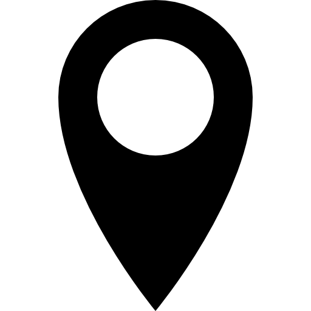

  <div class="jumbotron" id="map container" style="position: relative">
    <h1>Map in Angular</h1>

    <!--Map image-->
    <div (onmousemove)="getCursorPosition(e)"
         (click)="logCursorPosition(e)"></div>
    

    <!--template for map marker-->
 
    <!---->
  
  
  
  
  
  </div>


<!--form appears on marker placement-->
<div class="form-popup" id="myForm">
  <form class="form-container" 
        #mapMarker="ngForm"
        (ngSubmit)="markerFormSubmit(mapMarker.value, getCursorPosition(e))">
    <input type="text" class="form-control" placeholder="Enter Description" name="description" ngModel>
    <button type="submit" class="btn btn-sm">Submit</button>
    <button type="button" class="btn cancel btn-sm" (click)="closeForm()">Close</button>
    <button type="button" class="btn delete btn-sm">Delete</button>
  </form>
</div>
